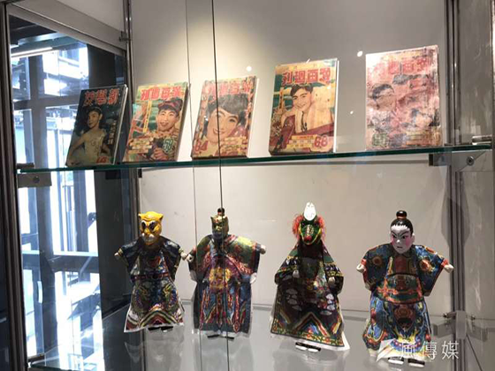

臺灣漫畫指在臺灣製作或發行的漫畫，受日本漫畫的影響很深。臺灣漫畫產生於二十世紀初期的日本統治時代，一九三五年出版《雞籠生漫畫集》的雞籠生（原名陳炳煌）為臺灣第一個出書的漫畫家，隨著原創作品漸多，台漫的題材、風格漸趨多元，漫畫家嘗試揮別日漫等國外商業漫畫的影響，累積出個人特色，「早期漫畫家的取材，特別容易受到日漫流行的影響；或者講到台灣在地的故事，往往會連結到角頭、宮廟文化等刻板印象。但倘若內容過於單一，久了讀者會失去興趣，倘若社會整體對土地更加重視，有認識的需求，不一樣的作品就會相繼誕生，這也是漫畫家創作必須著重的方向。」
